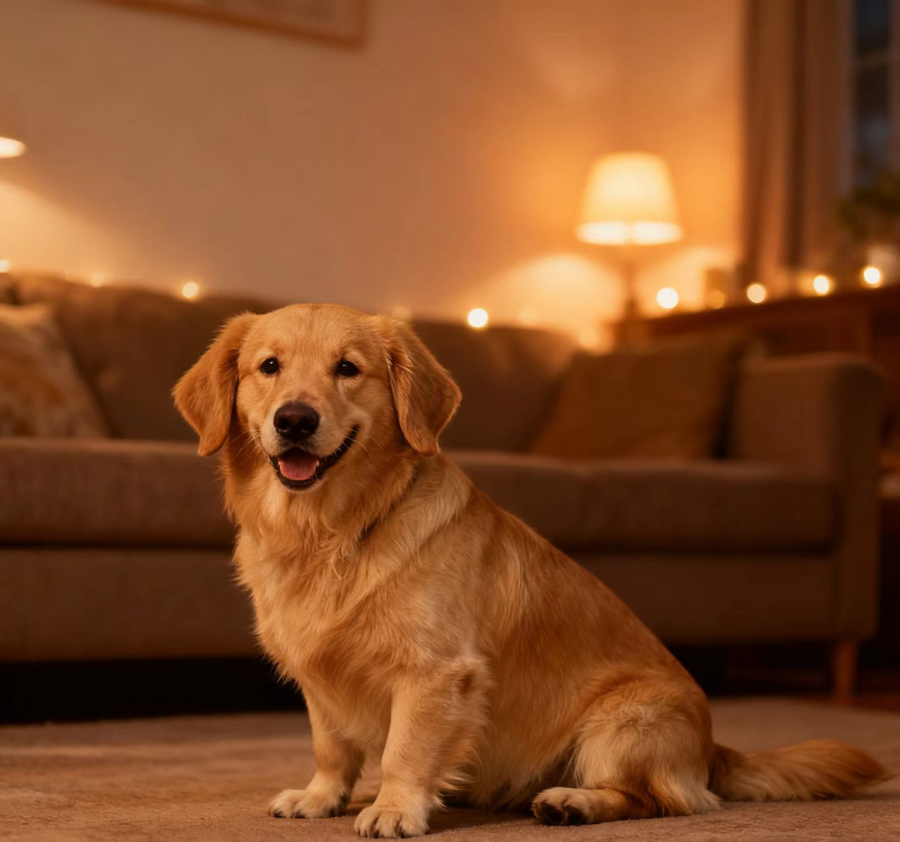
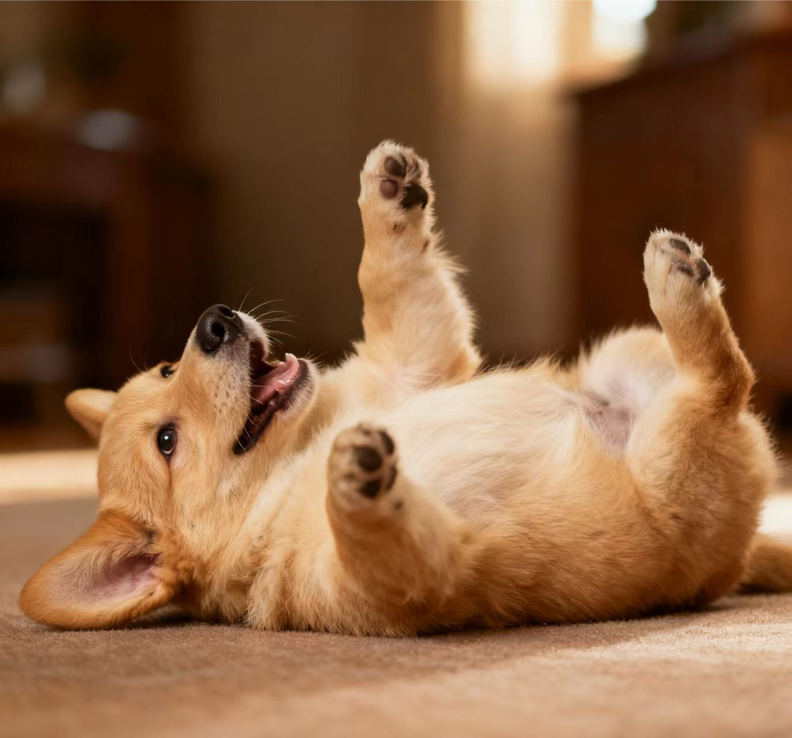
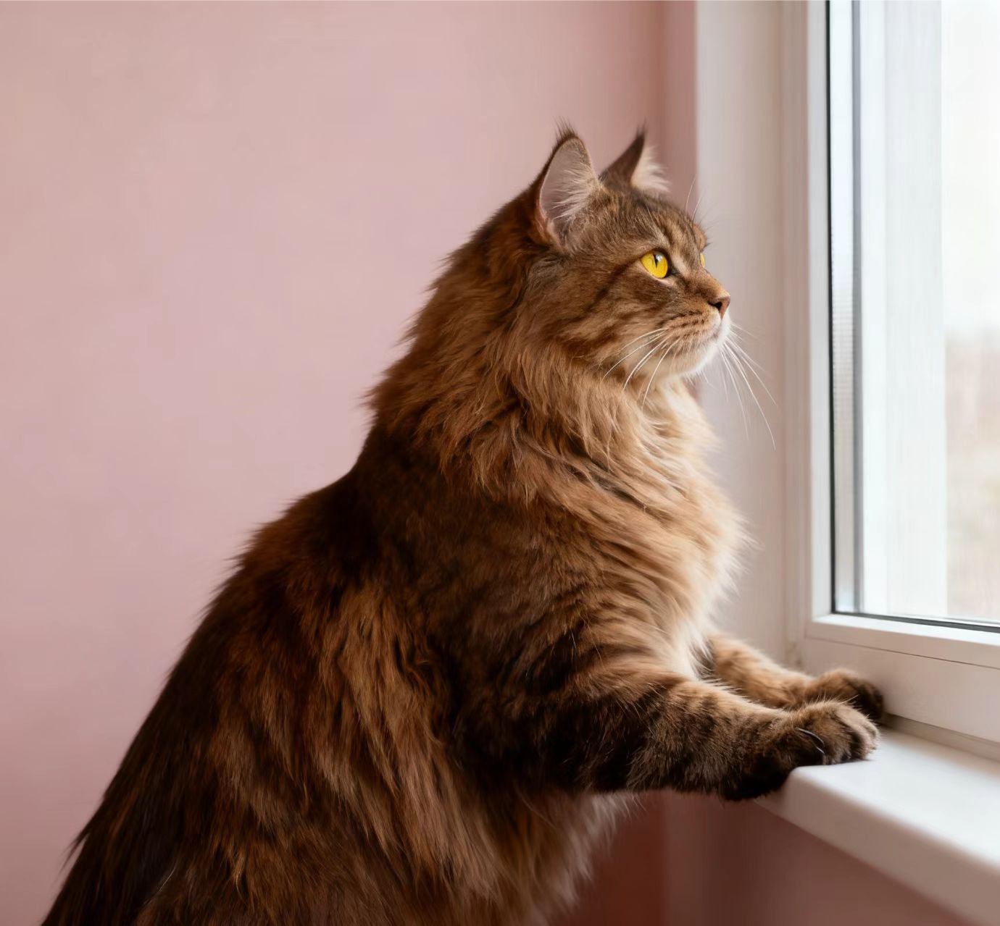
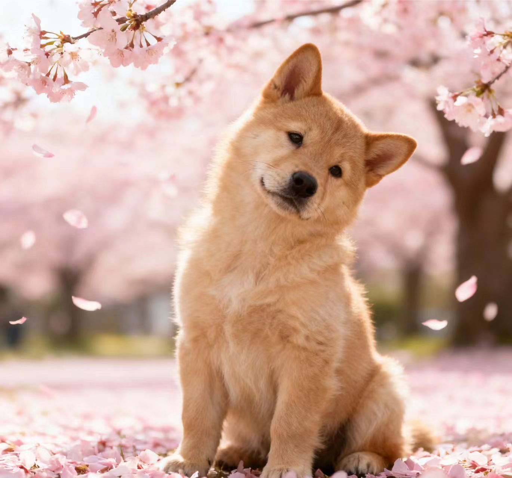

我们是谁
萌宠救助中心成立于 2015 年，是一个以城市流浪猫狗救助为核心的非营利民间组织。目前主要由全职运营团队与上百名长期志愿者共同维护，致力于救助、治疗、绝育、送养以及公众教育。
我们相信，尊重生命是城市文明的重要组成部分。通过建立标准化的救助流程、透明的财务公示和多元的公众活动，让更多人了解并参与到流浪动物保护中来。
发展足迹
2015 - 2017
由几位个人救助人自发成立小型救助点，逐步形成稳定的志愿者团队。
2018 - 2020
正式注册为社会组织，建立救助基地，与多家医院合作，开展 TNR（捕捉-绝育-放归）项目。
2021 - 2023
上线在线领养系统和公开账目，完善家访与回访机制，累计完成超过 1000 只动物的救助与送养。
2024 - 2025
与社区、校园、企业开展多种形式的公益合作，推动文明养宠与科学喂养的城市倡导。





